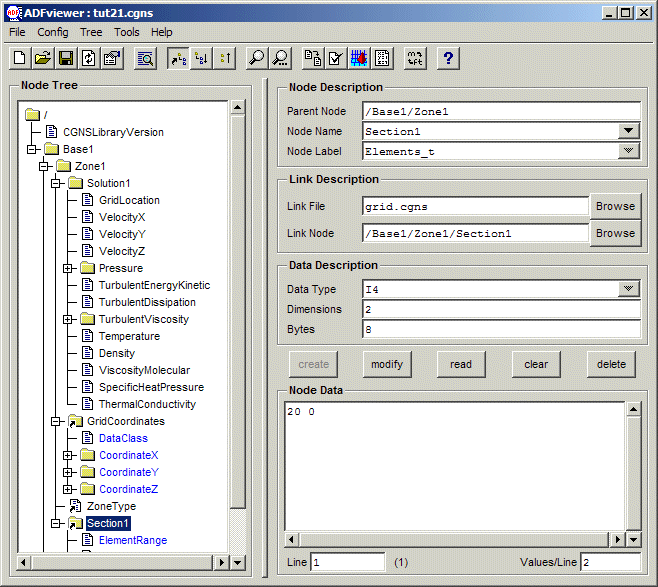

CGNSview Documentation
The CGNSview program provides a graphical user interface to view and edit
CGNS files. It reads the file using only the core cgio routines,
thus should be able to handle invalid or damaged CGNS files. If the adf2hdf
and hdf2adf executables are available, the viewer will be able to
read both ADF and ADFH based files.
The current documentation is brief in nature, but hopefully adequate
for most needs. You may click on the image below to jump to a topic, or
select from the following links.

[previous] [index] [next]